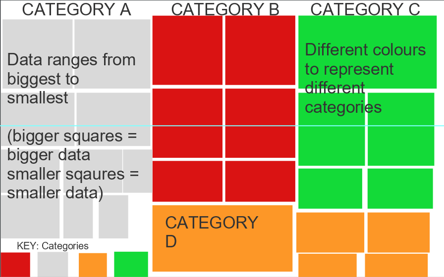
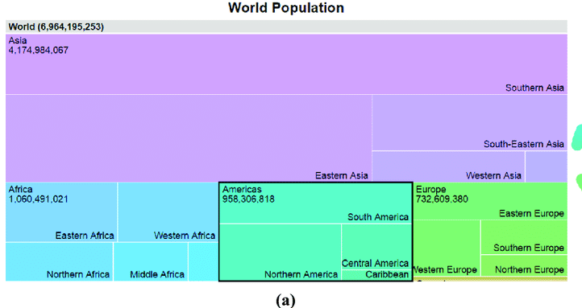
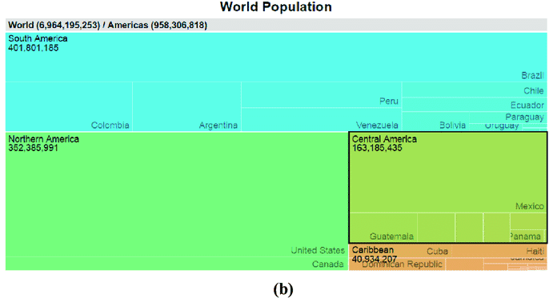

In terms of the font, I went with the font Playfair Display as I thought it was a font that screamed, "elegant" and "exclusive", which perfectly describes the theme of my website. Across the site, I have tried to stick to this font to create a consistency with regards to the font. This was done, to try and implement convention or appease to the expectdness of the users.
My website appeals to upper class individuals as it offers the finest and most elegant pieces of jewelry. In reltion to that aspect, I went with the colours, black and gold. Black is a classic colour and Gold is often associated with jewelry or expensie taste. I thought the colour of the scheme would suit the the theme of the website, as these two powerful colours provide a good contrast as well.
Pictures speak thousands of words. I included images of "expensive" looking jewelry that I thought would fit well with the overall message and theme of the website. I think it's a good visual cue as seeing as always believing. I made use of multiple images and videos of jewlery from necklaces, to earings, to rings. This further added to the aesthetic of the website.
Data Visualization Planning
In represnting data in the form of visuals, I decided to go with the tree map.
A treemap is a visual method for displaying hierarchical data that uses nested rectangles to represent the branches of a tree diagram. Each rectangles has an area proportional to the amount of data it represents.
In planning for my data visualisation, I had to come to terms with the notion of hierarchical data as well as tree maps with D3.js
As its name implies, the hierarchical database architecture is best suited for use scenarios where the primary goal of information collecting is based on a clear hierarchy, such as when a number of different employees at a corporation report to a single department.
The structure of hierarchical databases is characterized by a tree-like organization, in which each subdirectory branch, or child record, may link to various other subdirectory branches. There is typically a root "parent" directory of data stored as records that links to various other subdirectory branches.
While a parent record may contain numerous child records, according to the hierarchical database structure, each child record can only have one parent record.
Rough sketch of tree map: prototype.

Rough sketch of tree map: prototype.
A treemap is a rectangular visualization for a hierarchal model as shown above. A fresh treemap layout is produced using the function generator d3.treemap(). The root of a hierarchy model is what we supply to the treemap layout when we call it. It then determines the location of each rectangle and assigns the four parameters x0, y0, x1, and y1 to each node. The top left and bottom right corners of the rectangle are represented by these attributes.
The values in the child's and parent's value attributes determine how much of a rectangle a kid occupies inside its parent's rectangle. For instance, the value property of the parent rectangle must match the total of the value properties of the child rectangles in order for the parent rectangle to include all of the rectangles for its children.
The following are the steps I did to create a successful-looking tree map:
From a d3.hierarchy model, retrieve the root element.
If any model node's value attribute is missing, add it.
Set the size and tiling strategy for a new treemap layout, if necessary. I chose the binary tiling techniques from the six available in d3.js while building up the tiling nodes.
Call the treemap layout function, passing it the root of the hierarchy model. This creates x0, y0, x1, and y1 properties in each node.
Render the rectangles using the x0, y0, x1, and y1 properties.
Set the values property - This was achieved by using an API and calling the values via json.fetch()
Additional Information on Data Visualisation Charts
The two data visualizations I've made in the Data Visualisation section, is a representation of movies data as well as games data. The Video game data set represents the top 100 video game sales and is grouped by the platform. Users can ready this tree map by looking at the categories which are all shaded by unique colours that is also displayed in the key section at the bottom. In each catergory of platform, the squares differ in size based on the value of the games. The most sold game in each group will have a large section of space in the square compared to the lowest or other games sales that are smaller in comparison.
The same thing can be said for the movie data-set. This represents the top 100 highest grossing films grouped by genre. In each genre category, there are squares that differ in size and this is a representation of their values. The movie with the biggest space or square in that genre category, is the highest grossing movie within their category and the oppsoite applies for the smallest sqaure.
The reason I chose these two data sets to represent was due to the lack of API's based on Jewlery or anything related to the theme of my website. It was quite the mission finding anything related to what my website is about, and if I did find something, it wasn't much data that I could use to represent. In addition, they all required a fee in order for me to be given a unique key.
Data Visualization Findings
Through the data visualisation of the data set provided for top video game sales and top movie sales, I found that the platform/console Wii had taken up the biggest space, consisting of bigger squares compared to other consoles. In addition to that, the Wii Sports was found to be the top game to be sold at a vlue of 82 billion dollars. I then further did some research on the success of the Wii console and found that the sales figures, mostly attributable to accessibility, speak for themselves. Compared to the competing controllers' eight buttons apiece, the Wii mote+Nunchuck's basic four-button controls provided a more user-friendly experience. In addition, the Wii Sports was the most sold video game because of its motion-controlled minigames based on well recognized sports like tennis, bowling, baseball, and golf, Wii Sports was simple to comprehend. Each game was immediately understandable, requiring just a passing familiarity with the motion-sensing technology of the Wii remote to participate. The inclusive appeal of playing with family and friends was further enhanced by importing user-created Mii avatars into the proceedings.
The Wii's debut advertising served to further reinforce this. In contrast to its rivals, Nintendo employed television advertising that appealed to a larger audience by adopting strategies that encouraged parents and grandparents to play, with the internet ads using phrases like "Wii would want to play" and "Experience a new way to play."
Next we look at the top 100 Highest grossing films grouped by genre. The findings through this data visualisation was quite interesting due to the fact that the highest grossing films mostly fell within the Genre of action. What's also interesting to see is how the rise of action movies have increased along the years. The action movies from 1940 look very different to the ones now in 2022, and I can only credit this increase of action movies to the rise of technology and its improvements of special effects, green screens and so on. Another interesting point to note out is how the move towards technology intensive movies, such as action movies, because the movies became, "relatively cheap" to produce. Innovations such as Computer Generated Imagery (CGI) made including action scene cheaper. Nowadays you don't actually have to blow up an actual building in order to blow up in your movie, thus prompting directors/producers to include action sequence when prior to this, it would have been considered an unjuztifiable expense.
Video games grouped by dominat console - Wii
Films grouped by dominant genre - Action
Interactive Data Visualization Planning
While planning for my interactive data visualisation, I thought it would be effective to try and find a way in which to make a treemap, which I had used for my two previous static data visualisation, interactive.
In trying to find a way to do so, I came across a series of examples, specifically from the d3.js website. The images I have included below is considered interactive as it has the property of clicking on certain elemnts, resulting in zoomable data. The elemnts of being able to zoom is what would make my chart interactive.
Using the examples below, I began planning out how I would get my charts to resemble the one below. Firstly, I knew that just as my static data used hierarchical data, the same would apply here. Additionally, instead of a parent child like relationship that the data had in my static data visualisations, it would be a grandparent-parent-child relationship in the interactive data visualisations. This was a crucial part for me to understand as this time, I was going to be the one constructing a Json file to manually insert the data I found from a website, as I could not come across any jewllery APIs and the ones related to jewelrywere not necessarily accessible and simple to use and implement.I went ahead retrieving values from the site and then placing them in a hierarchical data structure like this:
"key": "Japan",
"region": "Asia",
"subregion": "Eastern Asia",
"value": 934000000
In structuring the data like this, I could then group the data firstly, by World - which would be the grandparent or in other terms, the root. All the values generated from the different continents and countries would be equivalent to the value of the World. Secondly, I grouped the data by continents - The Americas, Asia, Europe and Oceania (Australia) and finally grouped them by countries. I can call this a interactive data because it allows fr more data to be explored. One can analyse the world expenditure on jewelleries or one can analyse specific continents or take it a step further and click on the continents to see the countries that are part of the World's expenditure on jewelry. The only difference between the images below and the actual implementation of my interactive data visualisation, is the use of subregions. Due to the data I collected not having enough countries from the same subregions, I decided I would exclude that and go straight from continent to countries.

Clicked on the continent "Americas"

Zoomed in on the subregions in the Americas
Interactive Data Visualisation Findings
Sales of high-end jewellery and watches have increased hugely over the past two years. Mintel, one of the world's leading market research agencies recently discovered that jewellery and watch sales have rocketed up to 66 percent over 2019 and 2020, an increase of 5 percent on the previous two years.It may come as little surprise that top of the leaderboard for jewellery and wristwatch sales is economic superpower - China.
With the largest economy on the planet, the Chinese market spend an astonishing $111.46 billion on jewellery and watches on a yearly basis. Second largest spender is, you guessed it, the United States of America. Nowhere near as much as China, but with a considerably smaller population, the USA as a whole spends, on average, $61.76 billion on jewellery or watches each year. This is an incredible amount of money and again shows how huge the market for jewellery and watches is around the globe. Hong Kong comes in at third in the list, with a total of $20.9 billion spending most on jewellery and watches on a yearly basis.
Data Art Planning
In this week’s task, we were set out to work on some type of data art, as long as we could find meaning in it and give a good explanation. This was no easy task, as I had no one clue about data art and what it encompasses. However, in the readings done and further research done, I gathered that a good place to start with constructing data art, is to start by data visualisation. This seemed like a good starting point as it allowed me to think about how I wanted to display the data, and what context or narrative I wanted it to be a part of to relay on to the audience. Looking at examples such as Aaron Koblin’s, Flight Patterns and Jonathan Harris and Sepandar Kamvar, We feel fine, I knew that I wanted the data that I would be working with to be something meaningful while conveying it in an artistic and explorative manner.
What I liked about how We feel fine, was its interconnectedness. It conveyed the message of millions of feelings all originating from one point and then dispersing. The common field was the phrase, “I feel” or “I am feeling”. I also really like different colours used with the circles, which one can assume relate to different types of feelings.
The data that I wanted to represent is the data that shows the correlation found between A nation’s per capita income and life expectancy.
Below are the steps that guided me in the planning of the Data art.
1) What do you want to represent?
The main aspect of this data art is visualizing the relationship between per capita income and life expectancy. It should show the relationship between countries and their per capita income and overall life expectancy. This is an interesting case study showing whether per capita income affects life expectancy. Money really extends our years as a nation, right? However, I found that the data provided apparently did not include factors such as disease and mortality...but it is a good starting point for visualizing something in art form.
2) How would you like this to appear?
Shape
The shape chosen here is a circle. I could have used other types of shapes or lines to convey this, but I thought shapes were the best because they could represent data in different ways. This makes the different colors used to assign different colors to different countries clearer and more distinguishable, as well as the different sizes assigned to different circles representing the populations of different countries. For these reasons, I thought the circle was a great shape. Because the circle is a symbolic shape when it comes to the concept of life. A closed circle is said to resemble the beginning and end of life, and no matter how different the circles are in size and color, the end is the same for everyone: death.
I used data visualization as a starting point for creating data art. While I haven't decided yet whether I'll keep the line chart to show key metrics like life expectancy and per capita income, I decoded the data this way and used it to create a narrative. This way the data can be read and interpreted. What should it be about, right? However, after reading an article by Kirel Benzi, he claims that data art uses data sets to convey emotion and that the piece has a more objective truth behind its construction and not just the artist's since it is based on data (Benzi, 2020). In addition, he further asserts that the data used to create the play should be reasonably understandable to the audience, with adequate explanations, even if the meaning is not obvious at first glance (Benzi, 2020). Something he finally mentioned that caught my eye and helped me decide if I really wanted this data art displayed through a line graph was that he made a distinction between data art, data visualization, and generative art. Data visualization attempts to be an effective representation of data in visuals, and generative art relies on randomness, often found in nature, to evoke emotion (Benzi, 2020). The path I took led more into the field of data visualization, which, with sufficient explanation, could also be called data art. I’m strictly instructed to make data art. By data art I am referring to visualizations of data primarily aimed at entertaining or creating an aesthetic experience. It is art based on data. As such, we can judge its merits as we do with art in general. It's all about the aesthetic experience and coming to this conclusion I realized that I initially wanted my art to be as effective as the data visualization in relaying the data, and so I concluded that I shouldn't if it's all about the aesthetic experience and the pleasure it generates. Is anyone worried about how accurately or effectively I am reporting the data given? Instead, I should create something that encompasses the dataset and its narrative. This is where the idea of explanation and exploration comes into play. According to Riche et al. data-driven stories contain both explanatory and exploratory facets that can be integrated with each other to varying degrees, and an example of this would be the flexibility an artist would offer their audience and the interpretation suggested (Riche et al, 2020). I really wanted to incorporate that into this data art as I wanted to give users a context of where the data art resides and give them the flexibility to come up with their own ideas and their own interpretations and analysis of the data (Riche et al, 2020). So I think that based on the current sketch I have right now, I should work on balancing how much information should be presented to the audience versus how much information should be left out so that the audience can make their own interpretations and not have my data art feels too much like data visualization where the information is as clear as day and there is no room for other opinions, emotions and creativity (Benzi, 2020).
Rough Idea on how Data Art will come out looking
Rough draft of Data Art
The rough sketch above shows how I envision my data art. Regarding the aesthetics of the art itself, tiny decisions still need to be made, e.g., should I have a key to represent what the different colors mean. On the other hand, I could always exclude the key and leave it as it is and let the audience know what they are representing through a brief explanation. Another aspect I'm considering is putting in some animation or some sort of playthrough. This allows the audience to see all the circles starting at 0 and moving to their respective values. This would make the overall aesthetic experience even more enjoyable, in my opinion
Data-Art Meaning
In the data-art I included a play loop of the life expectancy and per capita income along the years. This was intentionally done, as the circles represent individuals belonging to the world/their nation and the progression of movement symbolising the race of life. Everybody wants to make it to their old age, everybody wants to experience all that they can, but for many others, this is not achievable due to their wealth status which correlates to their health. Individuals that have the necessary resources such as money, are able to take care of themselves and receive the adequate care and services needed in promoting a healthy and more fuitful life. On the otherhand, the unfortunates few that don't have access to such resources suffer in the hands of the world, due to illness, poor health care, poor nutrition and etc. It's a race to the top, but others have a lot more advantages compared to the rest, due to the resources available to them. However, as viewers can see, once time has lapsed and each individual or nation has reached the end, the loop reverts and goes back to the beginning. This is symbolic as it represents the natural phenomenon of life, we all go back to where ever we came from. No matter who's on top or at the bottom, the end is the one thing that everybody has in common and no one can escape despite havng powerful and useful resources. Which ties up with the use of the circle shape, as I previously mentioned, these circles present the different nations and the people within those nations. We're all embodiments of the circle shape, we may be different in colour, shape or beliefs, but fundamentally, we're all the same and the same fate awaits all of us.
.png)
.png)
.png)
.png)
.png)